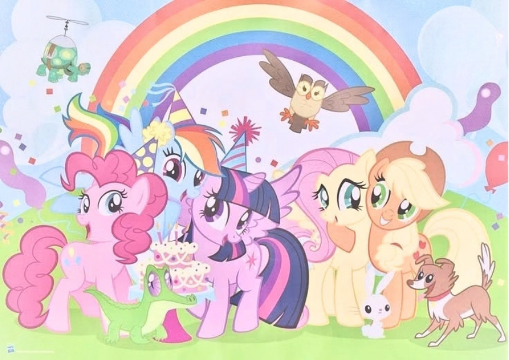

A estreia dos brinquedos
A franquia começou originalmete nos anos 80 como uma linha de brinquedos antes de se tornar um grande sucesso na TV.

Arquivo histórico • EquestriaA franquia começou originalmete nos anos 80 como uma linha de brinquedos antes de se tornar um grande sucesso na TV.
As marcas no flanco das pôneis representam seus talentos únicos e só aparecem quando descobrem sua vocação.
Em Equestria, o clima não muda sozinho! Os Pégasos são responsáveis por mover as nuvens e agendar as estações.